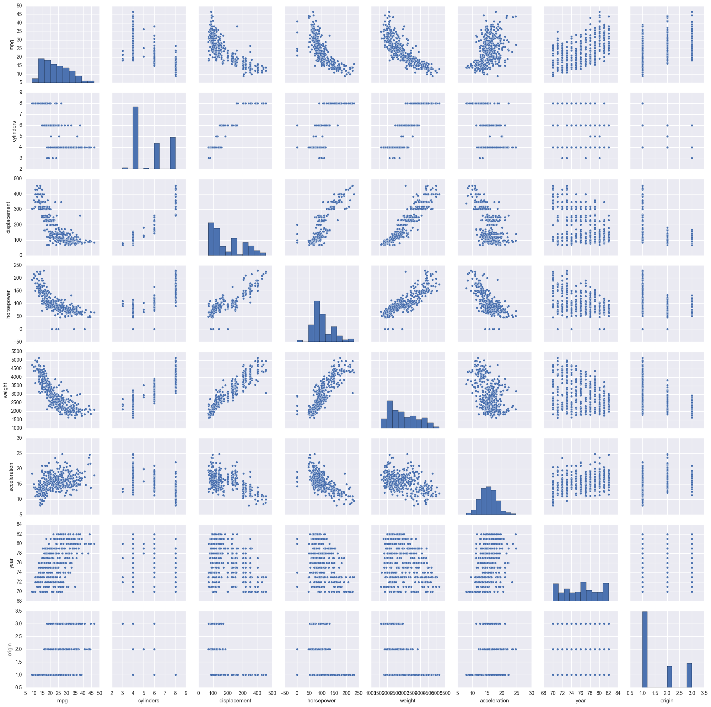

Exercise 7.8
import pandas as pd
import numpy as np
import matplotlib.pyplot as plt
import seaborn as sns
from sklearn.pipeline import Pipeline
from sklearn.preprocessing import PolynomialFeatures
from sklearn.model_selection import cross_val_score
from sklearn.linear_model import LinearRegression
from patsy import dmatrix
%matplotlib inline
df = pd.read_csv('../data/Auto.csv')
# Visualize dataset
df.head()
| mpg | cylinders | displacement | horsepower | weight | acceleration | year | origin | name | |
|---|---|---|---|---|---|---|---|---|---|
| 0 | 18.0 | 8 | 307.0 | 130 | 3504 | 12.0 | 70 | 1 | chevrolet chevelle malibu |
| 1 | 15.0 | 8 | 350.0 | 165 | 3693 | 11.5 | 70 | 1 | buick skylark 320 |
| 2 | 18.0 | 8 | 318.0 | 150 | 3436 | 11.0 | 70 | 1 | plymouth satellite |
| 3 | 16.0 | 8 | 304.0 | 150 | 3433 | 12.0 | 70 | 1 | amc rebel sst |
| 4 | 17.0 | 8 | 302.0 | 140 | 3449 | 10.5 | 70 | 1 | ford torino |
Pre-processing data
# 'horsepower' is a string
# We would like it to be a integer, in order to appear in scatter plots.
type(df['horsepower'][0])
str
# 'horsepower' is a string because one of its values is '?'
df['horsepower'].unique()
array(['130', '165', '150', '140', '198', '220', '215', '225', '190',
'170', '160', '95', '97', '85', '88', '46', '87', '90', '113',
'200', '210', '193', '?', '100', '105', '175', '153', '180', '110',
'72', '86', '70', '76', '65', '69', '60', '80', '54', '208', '155',
'112', '92', '145', '137', '158', '167', '94', '107', '230', '49',
'75', '91', '122', '67', '83', '78', '52', '61', '93', '148', '129',
'96', '71', '98', '115', '53', '81', '79', '120', '152', '102',
'108', '68', '58', '149', '89', '63', '48', '66', '139', '103',
'125', '133', '138', '135', '142', '77', '62', '132', '84', '64',
'74', '116', '82'], dtype=object)
# Replace '?' value by zero
df['horsepower'] = df['horsepower'].replace(to_replace = '?', value = '0')
df['horsepower'].unique() # Check if it's ok
array(['130', '165', '150', '140', '198', '220', '215', '225', '190',
'170', '160', '95', '97', '85', '88', '46', '87', '90', '113',
'200', '210', '193', '0', '100', '105', '175', '153', '180', '110',
'72', '86', '70', '76', '65', '69', '60', '80', '54', '208', '155',
'112', '92', '145', '137', '158', '167', '94', '107', '230', '49',
'75', '91', '122', '67', '83', '78', '52', '61', '93', '148', '129',
'96', '71', '98', '115', '53', '81', '79', '120', '152', '102',
'108', '68', '58', '149', '89', '63', '48', '66', '139', '103',
'125', '133', '138', '135', '142', '77', '62', '132', '84', '64',
'74', '116', '82'], dtype=object)
# Convert 'horsepower' to int
df['horsepower'] = df['horsepower'].astype(int)
type(df['horsepower'][0]) # Check if it's ok
numpy.int32
Relationships analysis
# Scatterplot matrix using Seaborn
sns.pairplot(df);

mpg seems to have a non-linear relationship with: displacement, horsepower and weight. Since in the book they compare mpg to horsepower, we will only analyse that relationship in this exercise.
Non-linear models
Non-linear models investigated in Chapter 7: Polynomial regression Step function Regression splines Smoothing splines Local regression Generalized additive models (GAM)
We will develop models for the first three because we didn't find functions for smoothing splines, local regression and GAM.
# Dataset
X = df['horsepower'][:,np.newaxis]
y = df['mpg']
Polynomial regression
for i in range (1,11):
model = Pipeline([('poly', PolynomialFeatures(degree=i)),
('linear', LinearRegression())])
model.fit(X,y)
score = cross_val_score(model, X, y, cv=5, scoring='neg_mean_squared_error')
print("Degree: %i CV mean squared error: %.3f" % (i, np.mean(np.abs(score))))
Degree: 1 CV mean squared error: 32.573
Degree: 2 CV mean squared error: 30.515
Degree: 3 CV mean squared error: 27.440
Degree: 4 CV mean squared error: 25.396
Degree: 5 CV mean squared error: 24.986
Degree: 6 CV mean squared error: 24.937
Degree: 7 CV mean squared error: 24.831
Degree: 8 CV mean squared error: 24.907
Degree: 9 CV mean squared error: 25.358
Degree: 10 CV mean squared error: 25.270
The polynomial degree that best fits the relationship between mpg and horsepower is 7.
Step function
for i in range(1,11):
groups = pd.cut(df['horsepower'], i)
df_dummies = pd.get_dummies(groups)
X_step = df_dummies
y_step = df['mpg']
model.fit(X_step, y_step)
score = cross_val_score(model, X_step, y_step, cv=5, scoring='neg_mean_squared_error')
print('Number of cuts: %i CV mean squared error: %.3f' %(i, np.mean(np.abs(score))))
Number of cuts: 1 CV mean squared error: 74.402
Number of cuts: 2 CV mean squared error: 43.120
Number of cuts: 3 CV mean squared error: 36.934
Number of cuts: 4 CV mean squared error: 41.236
Number of cuts: 5 CV mean squared error: 30.880
Number of cuts: 6 CV mean squared error: 29.083
Number of cuts: 7 CV mean squared error: 29.269
Number of cuts: 8 CV mean squared error: 28.562
Number of cuts: 9 CV mean squared error: 27.776
Number of cuts: 10 CV mean squared error: 24.407
The step function that best fits the relationship between mpg and horsepower is the one with 10 steps.
Regression splines
There are two types of regression splines: splines and natural splines. The difference between these two groups is that a natural spline is a regression spline with additional boundary constraints: the natural function is required to be linear at the boundary. This additional constraint means that natural splines generally produce more stable estimates at the boundaries.
Usually, cubic splines are used. These splines are popular because most human eyes cannot detect the discontinuity at the knots. We use both cubic and natural cubic splines in this exercise.
To generate split basis representation, the package patsy is used. patsy is a Python package for describing statistical models (especially linear models, or models that have a linear component). Check the References for more details.
Cubic splines
for i in range(3,11): # The degrees of freedom can't be less than 3 in a cubic spline
transformed = dmatrix("bs(df.horsepower, df=%i, degree=3)" % i,
{"df.horsepower":df.horsepower},
return_type='dataframe') # Cubic spline basis representation
lin = LinearRegression()
lin.fit(transformed, y)
score = cross_val_score(lin, transformed, y, cv=10, scoring='neg_mean_squared_error')
print('Number of degrees of freedom: %i CV mean squared error: %.3f' %(i, np.mean(np.abs(score))))
Number of degrees of freedom: 3 CV mean squared error: 24.268
Number of degrees of freedom: 4 CV mean squared error: 22.195
Number of degrees of freedom: 5 CV mean squared error: 22.319
Number of degrees of freedom: 6 CV mean squared error: 22.028
Number of degrees of freedom: 7 CV mean squared error: 22.099
Number of degrees of freedom: 8 CV mean squared error: 22.145
Number of degrees of freedom: 9 CV mean squared error: 21.783
Number of degrees of freedom: 10 CV mean squared error: 21.965
Natural cubic splines
for i in range(3,11): # The degrees of freedom can't be less than 3 in a cubic spline
transformed = dmatrix("cr(df.horsepower, df=%i)" % i,
{"df.horsepower":df.horsepower},
return_type='dataframe') # Cubic spline basis representation
lin = LinearRegression()
lin.fit(transformed, y)
score = cross_val_score(lin, transformed, y, cv=10, scoring='neg_mean_squared_error')
print('Number of degrees of freedom: %i CV mean squared error: %.3f' %(i, np.mean(np.abs(score))))
Number of degrees of freedom: 3 CV mean squared error: 27.132
Number of degrees of freedom: 4 CV mean squared error: 24.297
Number of degrees of freedom: 5 CV mean squared error: 22.317
Number of degrees of freedom: 6 CV mean squared error: 21.721
Number of degrees of freedom: 7 CV mean squared error: 21.904
Number of degrees of freedom: 8 CV mean squared error: 22.019
Number of degrees of freedom: 9 CV mean squared error: 21.926
Number of degrees of freedom: 10 CV mean squared error: 22.201
The regression spline that best fits the relationship between mpg and horsepower is a natural cubic spline with 6 degrees of freedom. This is also the model that gives the best results of the three considered in this exercise.
Notes regarding regression splines: In practice it is common to specify the desired degrees of freedom, and then have the software automatically place the corresponding number of knots at uniform quantiles of the data. This way, knots are placed in a uniform fashion. Knowing the degrees of freedom (df), we can know the number of knots (K). If it is a cubic spline, we have df = 4 + K. If it is a natural cubic spline, we have df = K because there are two additional natural constraints at each boundary to enforce linearity. However, regarding natural cubic splines, different interpretations can be made. For example, it can be said that df = K - 1 because it includes a constant that is absorbed in the intercept, so we can count only K-1 degrees of freedom. * Cross-validation is an objective approach to define how many degrees of freedom our spline should contain.
Notes
- Solved exercises use displacement instead of horsepower, so I couldn't verify my solutions. I only found one set of solved exercises for this exercise.
- According to https://github.com/JWarmenhoven/ISLR-python/blob/master/Notebooks/Chapter%207.ipynb, Python does not have functions to create smoothing splines, local regression or GAMs.
References
- Introduction to Statistical Learning with R, Chapter 3.3
- http://www.science.smith.edu/~jcrouser/SDS293/labs/lab13/Lab%2013%20-%20Splines%20in%20Python.pdf
- https://github.com/JWarmenhoven/ISLR-python/blob/master/Notebooks/Chapter%207.ipynb
- http://patsy.readthedocs.io/en/latest/API-reference.html (search for: 'patsy.cr')